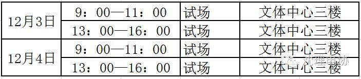
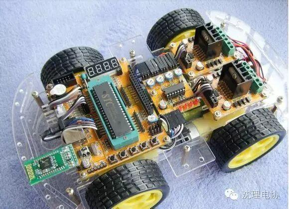

理工杯大赛通知
亲爱的理工杯参赛队员，12月2日晚18：00到21：00于文体210进行小组抽签，请各队伍派出一到两名同学携带另外一张报名表报现场进行抽签。
12月3日进行试场。
请关注沈阳理工大学电协官方微信平台随时留意比赛情况。
 关注一下又不会怀孕！
关注一下又不会怀孕！
时间安排 
1，试场时间请查看试场顺序表
2，进入场地需脱鞋并者白色袜子

智能机器人灭火比赛最早是由美国三一学院杰克门德尔逊等一批国际著名机器人学家发起创办的，比赛要求参赛机器人按
照预先编排好的程序，通过传感器和超声波等探测设备对周围环境进行模拟分析搜索，在“房间”里用最快的速度找到代表火源的蜡烛并将其扑灭，谁用时最短谁就获胜。目前，灭火比赛已发展成为世界上最为普及、最具影响力的。

编辑 信息部 白金朋